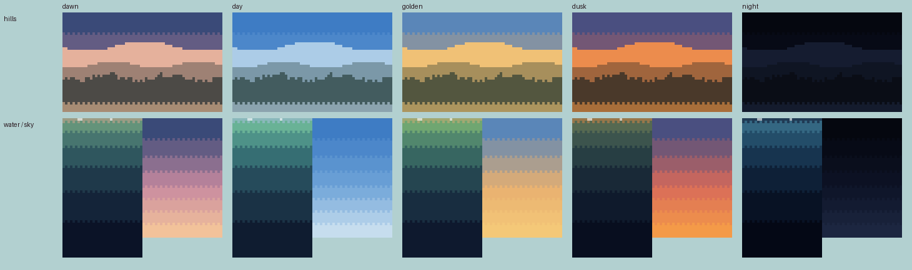
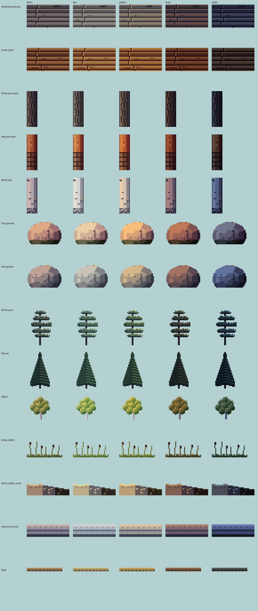
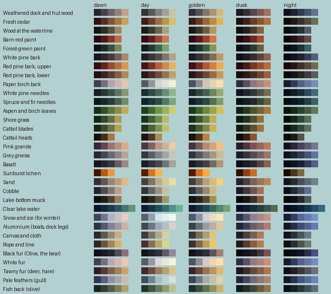

<title>Lake Materials Library</title>
<meta name="claude:viewport-fit-sides" content="cover">
<link rel="preconnect" href="https://fonts.googleapis.com">
<link rel="stylesheet" href="https://fonts.googleapis.com/css2?family=Pixelify+Sans:wght@500;700&family=Source+Serif+4:opsz,wght@8..60,400;8..60,600&family=JetBrains+Mono:wght@400;600&display=swap">
<style>
/* Layout: a single reading column like a field-station report, with full-bleed image plates and swatch strips drawn from the lake itself. */
:root {
  --bg: #eef1ec;
  --panel: #e2e8e2;
  --ink: #1b2826;
  --muted: #566764;
  --line: #c3cec7;
  --accent: #a24f45;
  --pine: #2d5747;
  --display: "Pixelify Sans", "Courier New", monospace;
  --body: "Source Serif 4", Georgia, "Times New Roman", serif;
  --mono: "JetBrains Mono", ui-monospace, Menlo, Consolas, monospace;
}
@media (prefers-color-scheme: dark) {
  :root:not([data-theme="light"]) {
    --bg: #0f1918; --panel: #172423; --ink: #e2e9e4; --muted: #97a9a4; --line: #2a3b39;
    --accent: #e29a8b; --pine: #86bba4; color-scheme: dark;
  }
}
:root[data-theme="dark"] {
  --bg: #0f1918; --panel: #172423; --ink: #e2e9e4; --muted: #97a9a4; --line: #2a3b39;
  --accent: #e29a8b; --pine: #86bba4; color-scheme: dark;
}
* { box-sizing: border-box; }
body {
  background: var(--bg); color: var(--ink); font-family: var(--body); font-size: 17px; line-height: 1.6;
  padding-left: max(16px, env(safe-area-inset-left, 0px)); padding-right: max(16px, env(safe-area-inset-right, 0px));
  padding-block: 28px 64px;
}
main { max-width: 720px; margin: 0 auto; display: flex; flex-direction: column; gap: 44px; }
h1, h2, h3 { font-family: var(--display); font-weight: 700; line-height: 1.15; text-wrap: balance; margin: 0; }
h1 { font-size: clamp(32px, 7vw, 46px); letter-spacing: 0.5px; }
h2 { font-size: 26px; color: var(--pine); }
h3 { font-size: 19px; font-weight: 500; }
p { margin: 0; max-width: 65ch; }
section { display: flex; flex-direction: column; gap: 16px; }
.eyebrow { font-family: var(--mono); font-size: 12px; letter-spacing: 1.5px; text-transform: uppercase; color: var(--muted); }
.lede { font-size: 19px; }
a { color: var(--accent); }
figure { margin: 0; display: flex; flex-direction: column; gap: 8px; }
figure img { width: 100%; image-rendering: pixelated; border-radius: 4px; display: block; }
figcaption { font-size: 14px; color: var(--muted); }
.stats { display: grid; grid-template-columns: repeat(auto-fit, minmax(150px, 1fr)); gap: 12px; }
.stat { border-top: 3px solid var(--pine); padding-top: 8px; display: flex; flex-direction: column; gap: 2px; }
.stat b { font-family: var(--display); font-size: 30px; font-weight: 700; font-variant-numeric: tabular-nums; }
.stat span { font-size: 14px; color: var(--muted); }
ol.findings { margin: 0; padding-left: 1.4em; display: flex; flex-direction: column; gap: 12px; }
ol.findings li::marker { font-family: var(--mono); color: var(--accent); }
ol.findings b { font-weight: 600; }
.meter { display: grid; grid-template-columns: 9.5em 1fr; gap: 6px 12px; align-items: center; font-size: 14px; }
.meter .bars { display: flex; flex-direction: column; gap: 3px; }
.bar { height: 10px; border-radius: 2px; background: var(--line); position: relative; }
.bar i { position: absolute; inset: 0 auto 0 0; border-radius: 2px; }
.bar.ours i { background: var(--pine); }
.bar.pack i { background: var(--accent); }
.legend { display: flex; gap: 16px; font-size: 13px; color: var(--muted); flex-wrap: wrap; }
.legend span::before { content: ""; display: inline-block; width: 10px; height: 10px; border-radius: 2px; margin-right: 6px; vertical-align: -1px; }
.legend .l-ours::before { background: var(--pine); }
.legend .l-pack::before { background: var(--accent); }
.skies { display: flex; flex-direction: column; gap: 6px; }
.sky { display: grid; grid-template-columns: 7.5em 1fr; align-items: center; gap: 12px; font-size: 14px; }
.sky div { height: 30px; border-radius: 3px; }
.swatches { display: grid; grid-template-columns: repeat(auto-fit, minmax(200px, 1fr)); gap: 14px; }
.sw { display: flex; flex-direction: column; gap: 6px; min-width: 0; }
.sw .strip { display: flex; height: 34px; border-radius: 3px; overflow: hidden; }
.sw .strip i { flex: 1; }
.sw b { font-weight: 600; font-size: 15px; }
.sw span { font-size: 13px; color: var(--muted); font-family: var(--mono); overflow-wrap: anywhere; }
.lessons { display: grid; grid-template-columns: repeat(auto-fit, minmax(250px, 1fr)); gap: 18px 24px; }
.lessons div { display: flex; flex-direction: column; gap: 4px; }
.lessons h3 { color: var(--accent); }
.lessons p { font-size: 15px; }
ol.rules { margin: 0; padding: 0; list-style: none; counter-reset: r; display: flex; flex-direction: column; border-top: 1px solid var(--line); }
ol.rules li { counter-increment: r; display: grid; grid-template-columns: 2.4em 1fr; gap: 8px; padding: 12px 0; border-bottom: 1px solid var(--line); }
ol.rules li::before { content: counter(r, decimal-leading-zero); font-family: var(--mono); color: var(--muted); font-size: 14px; padding-top: 3px; }
.qs { display: flex; flex-direction: column; gap: 14px; }
.q { background: var(--panel); border-radius: 6px; padding: 16px 18px; display: flex; flex-direction: column; gap: 8px; }
.q h3 { font-size: 18px; }
.q ul { margin: 0; padding-left: 1.2em; font-size: 15px; display: flex; flex-direction: column; gap: 4px; }
.q .rec { font-size: 14px; color: var(--pine); font-family: var(--mono); }
.next { font-size: 15px; color: var(--muted); }
code { font-family: var(--mono); font-size: 0.85em; }
.plate { overflow-x: auto; border-radius: 4px; }
.plate img { width: auto; max-width: none; height: auto; display: block; }
.plate.fit img { max-width: 100%; width: 100%; }
.verdicts { display: grid; grid-template-columns: repeat(auto-fit, minmax(220px, 1fr)); gap: 12px; }
.v { border-left: 4px solid var(--line); padding: 4px 0 4px 12px; display: flex; flex-direction: column; gap: 2px; }
.v.ready { border-color: var(--pine); }
.v.study { border-color: var(--accent); }
.v b { font-family: var(--display); font-weight: 500; font-size: 17px; }
.v span { font-size: 14px; color: var(--muted); }
.lightrow { display: grid; grid-template-columns: repeat(5, 1fr); gap: 6px; font-family: var(--mono); font-size: 12px; color: var(--muted); text-align: center; }
</style>

<main>
  <header style="display:flex;flex-direction:column;gap:12px">
    <span class="eyebrow">Reel It In · Studio review 2 · 22 Oct 2026</span>
    <h1>The materials library</h1>
    <p class="lede">Thirty-two materials of the lake, each with a colour ramp drawn from the real place, lit five ways through the day, and a texture sample drawn by the research's rules. None of it is in the game yet: each material goes in once a study settles it.</p>
  </header>

  <section>
    <span class="eyebrow">Your decisions, recorded</span>
    <h2>A clear summer lake, lit by the hour</h2>
    <p>Clear green-teal water; the hut restyled for the north woods; summer, built so seasons can come later; a palette for each time of day; the common loon first. They're in <code>docs/studio/decisions.md</code>, and the style bible now treats them as settled.</p>
  </section>

  <section>
    <span class="eyebrow">How the light works</span>
    <h2>The light changes the colours, not a tint</h2>
    <p>Each time of day has a key light (the sun, or the moon at night) and an ambient colour (the sky). The lit end of every ramp takes the key light's colour and the shadowed end takes the sky's, so shadows stay cool and every material keeps its own character at night. Today's game lays one tint over everything instead.</p>
    <div class="lightrow"><span>dawn</span><span>day</span><span>golden</span><span>dusk</span><span>night</span></div>
    <figure>
      <div class="plate fit"></div>
      <figcaption>Low forested hills in three bands of haze in place of the alpine peaks; the clear lake darkening in bands; the sky in flat bands of varied height. At night the hills become dark shapes against a faintly lighter sky.</figcaption>
    </figure>
  </section>

  <section>
    <span class="eyebrow">Samples</span>
    <h2>Every material, every hour</h2>
    <figure>
      <div class="plate"></div>
      <figcaption>Shown four times larger than in the game. Scroll sideways on a phone to see all five times of day.</figcaption>
    </figure>
    <figure>
      <div class="plate"></div>
      <figcaption>All the ramps under the five lights: each step darker cools toward blue-violet, each step lighter warms toward yellow; aluminium the other way round.</figcaption>
    </figure>
  </section>

  <section>
    <span class="eyebrow">What the samples tell us</span>
    <h2>Ready, and not yet</h2>
    <div class="verdicts">
      <div class="v ready"><b>Weathered planks</b><span>Silver-grey, contrast at the seams, grain on only a few boards. Close to ready for the hut and dock.</span></div>
      <div class="v ready"><b>Bark</b><span>White pine furrows, red pine plates turning to orange flakes, birch with its marks and pink curl.</span></div>
      <div class="v ready"><b>Granite and gneiss</b><span>Big clean planes, a few flecks, lichen on top, algae at the waterline.</span></div>
      <div class="v ready"><b>Aspen, lakebed, aluminium, rope</b><span>Read well at every hour.</span></div>
      <div class="v study"><b>White pine</b><span>Reads as tiers but is too tidy; the real tree is ragged, flat-topped and flagged by the wind.</span></div>
      <div class="v study"><b>Spruce</b><span>Still striped: every tier is the same thickness. Needs uneven, drooping tiers.</span></div>
      <div class="v study"><b>Snow in golden light</b><span>Turns very yellow. To check against photos before winter.</span></div>
    </div>
  </section>

  <section>
    <span class="eyebrow">Next</span>
    <h2>Study 1: the sky and the distant hills</h2>
    <p>They fill the most of the screen and are furthest from our rules. I'll draw two or three versions of a full-width sky and hills at game size, at all five times of day, next to the current backdrop and the reference colours, and you pick.</p>
    <p class="next">Everything is in the repo under <code>docs/studio/</code>; the library itself is <code>tools/studio/materials.py</code>.</p>
  </section>
</main>
